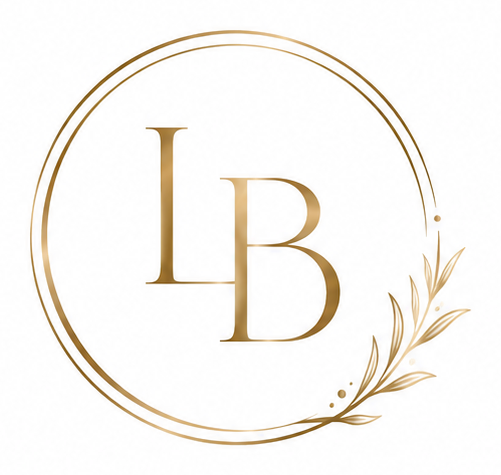

<!DOCTYPE html>
<html>
<head>
<meta charset="utf-8">
<title>Before and After — Black and Gold Stack</title>
<style>
  @font-face { font-family:'Pinyon Script'; src:url('fonts/PinyonScript-Regular.ttf'); }
  @font-face { font-family:'Jost'; src:url('fonts/Jost.ttf'); }

  :root{
    --black:#000;
    --gold:#E7B52C;
    --gold-hi:#F6D36A;
    --white:#FFF;
  }
  *{margin:0;padding:0;box-sizing:border-box;}
  body{background:#888;}
  .slide{
    width:1080px;height:1350px;position:relative;overflow:hidden;
    background:var(--black);font-family:'Jost',sans-serif;
  }

  /* Two halves, before on top. The 6px black seam between them is the only
     divider, same as the reference. */
  .half{position:absolute;left:0;right:0;height:672px;overflow:hidden;}
  .half.top{top:0;}
  .half.bottom{bottom:0;}

  /* The photo sits on the right and fades into black on its left edge, so a
     photo shot against any backdrop still reads as one black card and the
     script word has clean black to sit on. */
  .shot{position:absolute;top:0;right:0;bottom:0;}
  .shot img{
    width:100%;height:100%;object-fit:cover;display:block;
    transform-origin:var(--pos, 50% 50%);
  }
  .shot::after{
    content:'';position:absolute;inset:0;pointer-events:none;
    background:linear-gradient(90deg,
      #000 0%, rgba(0,0,0,.85) 8%, rgba(0,0,0,.35) 20%, rgba(0,0,0,0) 34%);
  }

  .word{
    position:absolute;left:44px;
    font-family:'Pinyon Script',cursive;font-size:150px;line-height:1;
    color:var(--gold);
    background:linear-gradient(170deg,var(--gold-hi) 10%,var(--gold) 55%,#C8921A 100%);
    -webkit-background-clip:text;background-clip:text;-webkit-text-fill-color:transparent;
    filter:drop-shadow(0 2px 6px rgba(0,0,0,.6));
    transform:rotate(-4deg);transform-origin:left center;
  }

  /* The monogram carries its own double ring; inverted to white, as in the
     reference. */
  .logo{
    position:absolute;top:26px;left:34px;width:108px;
    filter:brightness(0) invert(1) drop-shadow(0 0 8px rgba(0,0,0,.5));
  }

  .disclaimer{
    position:absolute;right:28px;bottom:20px;
    font-size:15px;letter-spacing:.22em;text-transform:uppercase;
    color:rgba(255,255,255,.55);font-weight:300;
  }
</style>
</head>
<body>
<div id="stage"></div>

<script>
/* One card per pair. Photos come from photos/before-after/, written by
   enhance-photo.py (same cleanup on both frames, no retouching).

   Per photo, three optional knobs, all you need to line the two faces up:
     width  how much of the card the photo covers, from the right   default 66
     pos    object-position, which part of the photo stays in frame default 'center'
     zoom   scale about pos, to match face size across the pair     default 1
   wordTop moves the gold script word inside its half.            */
const P = 'photos/before-after/';
const SLIDES = [
  { /* 1 — sample, client pair B (3/4 profile, the reference angle).
         Replace with the new pair once it arrives. */
    before:{ src:P+'sample-before.jpg', width:66, pos:'50% 60%', zoom:1 },
    after: { src:P+'sample-after.jpg',  width:66, pos:'50% 45%', zoom:1 },
    beforeWord:'Before', afterWord:'After' },
];

const n = parseInt(new URLSearchParams(location.search).get('slide') || '1', 10);
const s = SLIDES[n - 1];

const shot = p => `
  <div class="shot" style="width:${p.width || 66}%;--pos:${p.pos || '50% 50%'}">
    
  </div>`;

document.getElementById('stage').innerHTML = `
<div class="slide">
  <div class="half top">
    ${shot(s.before)}
    <div class="word" style="top:${s.beforeWordTop ?? 300}px">${s.beforeWord || 'Before'}</div>
  </div>
  <div class="half bottom">
    ${shot(s.after)}
    <div class="word" style="top:${s.afterWordTop ?? 360}px">${s.afterWord || 'After'}</div>
  </div>
  
  ${s.disclaimer === false ? '' :
    '<div class="disclaimer">Individual results vary</div>'}
</div>`;
</script>
</body>
</html>
